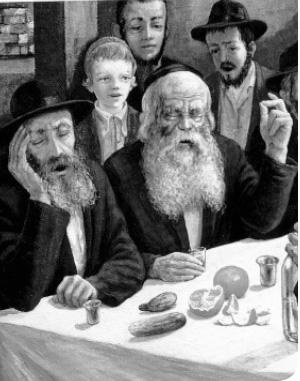

מהו ‘מצטער’?
מחד גיסא – חסידים אינם חשים צער מישיבה בסוכה בשעה שיש גשמים עזים. מאידך גיסא – קיים בהם ‘הרגש’ של צער מחמת אור רוחני “מקיפין דבינה” שקיים בסוכה אך אינו ממש מורגש על בשרם. האם החוש וההרגש החסידי צריך להוביל אותנו בשאלות הלכתיות? וכיצד זה קשור לאמונה כי הרבי חי וקיים?
מחד גיסא – חסידים אינם חשים צער מישיבה בסוכה בשעה שיש גשמים עזים. מאידך גיסא – קיים בהם ‘הרגש’ של צער מחמת אור רוחני “מקיפין דבינה” שקיים בסוכה אך אינו ממש מורגש על בשרם. האם החוש וההרגש החסידי צריך להוביל אותנו בשאלות הלכתיות? וכיצד זה קשור לאמונה כי הרבי חי וקיים?

משפיע בישיבת תומכי תמימים ראשון לציון
מהו ‘מצטער’?
“זכתה” מצוות השינה בסוכה שישתמשו בה רבים מאותם “בני תורה” שנטפלו לבוא בטענות על החסידים ו”להוכיח” כאילו החסידים “עוקרי הלכה” ח”ו. הללו “הוכיחו” זאת מאותו מנהג שקיים בכמה קהילות קודש בישראל, וליובאוויטש בהם, שאף כי מקפידים ומדקדקים ונזהרים שלא לשתות אפילו מים חוץ לסוכה – בכל זאת אין נוהגים לישון בסוכה.
והרי זה, טוענים הם, היפך הלכה מפורשת בשולחן ערוך, שהשינה בסוכה היא מעיקרי מצוות סוכה, ואסור לישון אפילו שנת ארעי חוץ לסוכה.
את ההסבר לענין זה מבאר כ”ק אדמו”ר מלך המשיח שליט”א (ראה באריכות לקוטי-שיחות כרך כ”ט עמוד 21 ואילך) שהסוכה היא מקום קדוש שאין מן הראוי לישון שם. וכדברי רש”י על הפסוק (ויצא כח, טז) “מה נורא המקום הזה ואנוכי לא ידעתי” – “שאילו ידעתי לא ישנתי במקום קדוש כזה”. הרי שבמקום קדוש לא ראוי לישון, והסוכה הרי היא מקום קדוש ביותר. וכפתגם כ”ק אדמו”ר האמצעי: “איך אפשר לישון ב’מקיפין דבינה’.”
ואף על פי שעל פי ההלכה חייבים לישון בסוכה, הרי התורה היא “תורה אחת” המורכבת מ”גוף”, שהוא החלק הנגלה, ומ”נשמה” שהוא חלק הפנימיות, ואיך ייתכן שההלכה תסתור ח”ו את פנימיות התורה –
הרי גם על פי ההלכה “מצטער – פטור מן הסוכה”, ומי שמרגיש את קדושתה של הסוכה וזה מפריע לו לישון, הריהו פטור מלישון בסוכה מדין “מצטער”. ואפילו מי שאינו מרגיש את קדושת הסוכה, אבל הוא מקושר לרבותינו נשיאינו, ויודע שהם אמרו “איך שייך לישון ב’מקיפין דבינה’”, וידיעתו זו מפריעה לו לישון – הריהו פטור על פי ההלכה מלישון בסוכה מדין “מצטער”. עד כאן נקודת ההסבר.
היו רבים מן ה”מתנגדים” שמילאו פיהם שחוק על הסבר זה: אלו דברים שאין הדעת סובלתן, טענו הללו. וכי ל”הרגשים חסידותיים” נפשיים שאי אפשר למדוד אותם ואין להם ולא כלום עם צער הגוף בגשמיות – אפשר לקרוא “מצטער”?!
ה”מצטער” שבהלכה מדובר על צער גשמי מפני הצינה או הזבובים והיתושים וכיוצא באלו, דברים גשמיים מוחשיים שאכן גורמים צער לגוף, ולכן אם הוא מצטער ואינו יכול לישון בגלל הצינה או הזבובים והיתושים, הריהו פטור מן הסוכה. אך אם אין לגוף שום צער מהמצאו בסוכה, אלא שהוא הכניס לעצמו לראש איזה שהם “הרגשים חסידותיים” שמפריעים לו – שיוציא מראשו את ה”הרגשים” ויקיים “ושכבת וערבה שנתך” בסוכה…
ה’הרגש החסידי’
ישנה הלכה נוספת בהלכות סוכה, מפורסמת קצת פחות, וגם בה נדמה שאין החסידים נוהגים כמפורש בשולחן ערוך, אך הפעם לחומרא:
ההלכה קובעת שאם ירדו גשמים והאדם מצטער לישב בסוכה, עליו לצאת מן הסוכה ולאכול בביתו. ובפוסקים ישנו אף ביטוי בקשר לזה שמי שמתעקש לשבת בסוכה למרות הגשמים, עליו נאמר “כל הפטור מדבר ועושהו נקרא הדיוט”! ואם למרות שהוא נקרא ‘הדיוט’ מתעקש הוא לשבת גם אז בסוכה – אסור לו לברך “לישב בסוכה”. זוהי ברכה לבטלה, מאחר שעתה אינו מחויב במצווה זו.
ואף על פי כן נהגו ונוהגים חסידים ואדמו”רים רבים – וליובאוויטש בהם – לישב בסוכה גם בשעת הגשמים, ובמפורש לברך גם בשעה כזו “לישב בסוכה”. כך נהג בפועל כ”ק אדמו”ר מלך המשיח שליט”א בהתוועדויות שמחת בית השואבה בסוכה גם בשעת גשמים עזים ביותר.
ישנו ביטוי בקשר לזה מאחד מאדמו”רי פולין: הדיוט אני, ואשב בסוכה! הוא מעדיף להיקרא “הדיוט” מאשר לצאת מן הסוכה.
גם כאן ישנם אלו ש”תואנה הם מבקשים” הנטפלים ומורים באצבע: ראו, כיצד על יסוד “הרגשים חסידותיים” שאין להם יסוד ברור בהלכה, “עוקרים” החסידים ח”ו הלכה מפורשת בשולחן ערוך ומברכים ברכה לבטלה ח”ו.
ואם תמצי לומר – זוהי אכן נקודת החידוש של תורת החסידות ודרכי החסידות, וזהו החילוק בין “חסיד” ל”מתנגד”:
אצל “מתנגד” – מי שלא למד חסידות, ולא חי עם הרבי – המציאות הגשמית היא היא המציאות האמיתית בעיניו. “מצטער” יכול להיות רק מפני הצינה, מפני הזבובים והיתושים, מפני הגשמים, או מסיבות גשמיות אחרות כיוצא באלו. כשהוא שומע על “מצטער” מפני “מקיפין דבינה” או מפני רגש ההתקשרות לרבי הוא ממלא פיו שחוק, על סוג “מצטער” משונה שכזה. וכאשר ישנו אכן מצב שיורד גשם והוא “מצטער” בגשמיות – אינו מקיים שום מצווה בישיבה בסוכה, וברכתו תהיה לבטלה, על פי ההלכה.
אולם החסידות פעלה על כל השייכים אליה, שהאלוקות תהיה אצלם ב”פשיטות” – מה שהקב”ה אומר, מה שהרבי אומר, מה שאומרת פנימיות התורה, זוהי האמת המוחלטת, גם בפשטות ובגשמיות. וגם אם עדיין אינני “אוחז” בזה בשלימות, משום שלא הצלחתי להגביר את הנפש האלוקית שבי על הגוף והנפש הבהמית – אבל מונח אצלי בפשיטות ובפשטות שזו האמת לאמיתה, גם אם אינני רואה אותה בעיני בשר ומרגיש זאת בחושים הגשמיים שלי.
והנחה זו בנפש היא כל כך מוחלטת וברורה אצל כל חסיד, יהיה מי שיהיה, עד שאצלו להתנהג להיפך מכך זהו צער גשמי עבורו, הרבה יותר מצער מגשמים או מזבובים ויתושים.
ולכן אף כאשר יורדים גשמים, וגופו הגשמי מצטער, הרי מכיוון שאצלו מונח בפשטות העניין הנפלא שיש בישיבה בסוכה, גם אם אינו חש זאת ממש בחושיו הגשמיים – יהיה אצלו הרבה יותר צער לצאת מן הסוכה מאשר להישאר בה. ומכיוון שהוא מרגיש כך הרי במצב כזה על פי ההלכה הוא אינו “מצטער” מן הגשמים. להיפך, הוא יהיה “מצטער” הרבה יותר אם נורה לו לצאת מן הסוכה. ולכן, במצב כזה מותר לו והוא חייב לישב בסוכה ולברך על כך על פי ההלכה.
מאידך, כאשר אין אמנם צער לגוף הגשמי, אבל הוא יודע שהרבי אמר כי סוכה הוא מקום קדוש ואי אפשר לישון שם – אצלו יהיה צער גשמי הרבה יותר חזק והרבה יותר עמוק מצער שבא מגשמים או מיתושים אם הוא ינהג שלא לפי מה שהרבי אמר.
כך מרגיש בפשטות כל חסיד ליובאוויטש בכל הדורות. ובפרט כך מרגיש כל מי שנקרא עליו שם חסיד של הרבי שליט”א מלך המשיח, גם אם הוא קטן שבקטנים ופשוט שבפשוטים.
ולכן על פי הלכה אין שום טעם ואין שום ענין שהוא יישן בסוכה בכל זאת, שכן הוא אכן “מצטער” באמת מן הסוכה, והרי “כל הפטור מדבר ועושהו נקרא הדיוט”!
וודאות מול ספק
זו אכן נקודת החסידות: מה אצלי יותר “מציאות” – האם מה שרואים בעיני בשר ומרגישים בחושים הגשמיים, או מה שהקב”ה אומר, מה שהרבי אומר, מה שהתורה אומרת, וזאת למרות שאינני רואה ואינני מרגיש זאת כל כך בחושי הגוף הגשמי.
אצל חסיד פשוט וברור ש”ה’ אחד” ו”אין עוד מלבדו” גם כאשר העולם נראה ומורגש למציאות, ואף על פי תורה יש לו מציאות אמיתית. ולמרות זאת הוא מכריז וקובע ברורות: “אתה הוא עד שלא נברא העולם, ואתה הוא – בדיוק אותו הדבר – משנברא העולם” בלי שום שינוי כלל.
לעומת זאת, אצל מי שלא חי עם הרבי ולא למד חסידות – ברור ופשוט אצלו שמציאות העולם היא היא המציאות, ואילו את ה”צמצום” הוא לוקח כפשוטו. ולכן הוא מתחיל לחפש כל מיני פירושים ו”פשט’לאך” בכל אותם פסוקים ומאמרי חז”ל – שהרי לא ייתכן שיסתרו את המציאות הגשמית הפשוטה הנראית לעיניים, שהיא בוודאי לדעתו אמיתית. אז מתחילים לחשוב ח”ו ש”ה’ אחד” הוא לא כפשוטו. ש”אין עוד מלבדו” זה לא ממש כך. ש”ה’ הוא האלקים” זה רק ברוחניות וכדומה.
וכתוצאה ישירה מכך – שדברי הרבי מלך המשיח הברורים על אודות הגאולה הנמצאת על הסף ממש, אינו אלא רק “משאלה” ורצון ותקווה ובטחון, שהרי “עינינו ראו ולא זר” את ההיפך הגמור. שהרי ראינו בעיני בשר ראינו את ג’ תמוז, ולכאורה ישנם גם על פי תורה דינים הקשורים בכך, ונמצאים אנו בגלות מרה חשוכה ועמוקה וכו’.
אבל מי שמונח אצלו בפשטות שכל פרט בתורה הוא אמת מוחלטת, וכל מילה של הרבי היא אמת מוחלטת שאינה ניתנת לשום שינוי. והרי יודעים אנו בבירור את דברי הרבי החל משנת תש”י ואילך פעמים אין ספור: “דער רבי לעבט”. הרבי נמצא עמנו בגשמיות כפשוטו. אצל הרבי ישנם גם עכשיו חיים ארוכים, חיים אמיתיים, חיים נצחיים בלי הפסק כלל. אצל הרבי אין את הענין של “במתים חפשי” ח”ו. הוא יכול לעשות קידוש ולפטור את הרבים. אין מה להידחף ב-770, שהרי הרבי נמצא בכל פינה. מי שנדחף מראה בזה שהוא מקטני אמנה. ועוד ועוד ביטויים שבעיני בשר ובחושים הגשמיים נשמעים אולי מאד מוזרים.
אבל אצל חסיד מונח ופשוט שדברי הרבי אמת בגשמיות ובפשטות בלי שום “פשט’לאך”. ואם אינני רואה ואינני מרגיש, זוהי בעיה שלי, אבל הענין הוא אמת לאמיתו גם ברגע זה שאני רואה ומרגיש את ההיפך הגמור.
וביחד עם זה ודווקא בגלל זה ברור ובטוח אצלו שמצב זה לא יישאר כך ח”ו בשום אופן. שהרי הרבי אמר והבטיח וניבא, והודיע שאין בזה שום ספק וספק-ספיקא, כי תיכף ומיד ממש נראה את הדברים מתקיימים בגשמיות גם לעיני בשר שלנו וגם בחושים הגשמיים שלנו.
אבל ה”כלי” מצדנו כדי לקבל זאת הוא האמונה המוחלטת בכל זה בפשטות ובוודאות ברורה ללא שום ספק וספק ספיקא. “ובאמונה זו נעשה הכל טוב גם בגלוי”, ובפשטות ממש לעינינו הגשמיות, כדברי רבנו הזקן באגרת הקודש בתניא (ד”ה “להשכילך בינה” סוף סימן י”א).
והרי סוף סוף זו התכלית והמטרה הסופית שהרבי הציב לעצמו ולדורנו זה, דור השביעי – “להוריד את השכינה למטה בארץ”. שכל העניינים העמוקים והנפלאים ביותר, ועד עצמותו יתברך ממש שלמעלה מכל הפלאה ומכל גדר וכו’, כל זה ירד ויתבטא ויהי’ נראה ונרגש גם בעיני בשר ובחוש המישוש הגשמי הפשוט בגאולה האמיתית והשלימה.
והדבר וודאי וברור בלי שום ספק “אז דער רבי וועט אויספירן”, שהרבי ינצח ויצליח ויביא את הדברים בפועל ממש – על ידי שאנו אכן נעשה את הנדרש מאתנו, ונקבל את פני הרבי מלך המשיח שליט”א בפועל ממש.
יחי אדוננו מורנו ורבינו מלך המשיח לעולם ועד!